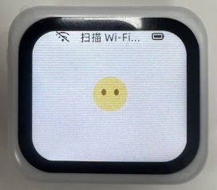

一石二鸟小智AI使用说明书¶
外置接口说明¶
开机键短按2S设备开机，长按3S设备关机
配网步骤¶
短按2S开机键将设备开机，启动完成之后会提示连接设备创建的Wi-Fi热点（该热点不需要密码），打开手机设置点击即可连接该Wi-Fi热点，如下图所示：热点名称是Xizaozhi-7E2D。
连接Wi-Fi热点之后会自动弹出一个网页，在网页中进行配网。如果没有自动弹出或者页面不小心关闭，则打开手机浏览器输入屏幕显示的地址，比如上图所示的地址是：http://192.168.4.1。
如上图所示，页面打开后，滑动到页面最底部，有显示可用的Wi-Fi列表，点击你想要连接的Wi-Fi，如下图所示想连接的Wi-Fi是OSTB-WIFI6——2.4G。
然后会自动跳到上面，可见SSID已经自动输入（您也可以不用下滑到最底部点击选择，可以手动输入SSID），接下来在密码输入框中输入密码，然后点击连接按钮即可完成配网，提示连接成功之后设备会自动重启。
如果没有提示连接成功，请检查：
SSID和密码是否正确。
热点信号是否太弱了。
连接服务器¶
配网成功，并且设备重启后会展示新的界面，上面显示了服务器地址和配对码，电脑或手机浏览器打开显示的服务器地址，比如下图的服务器地址是：https://yishierniao.cn。按照页面提示登录或者注册账号。
登录之后点击添加智能体，根据自己的喜好给智能体命名即可，这里的命名是：OSTB。
在命名的智能体中点击设备管理进入添加设备页面。
在添加设备页面中，点击在新增按钮，然后在弹出的窗口的输入框中填入设备显示或者播报的验证码，最后点击确定即可完成配对。
配对成功后，即可与智能体进行交互。
配置角色¶
按照上面的操作，将智能体配网并且添加到服务器之后，可以随时根据需要在服务器端对智能体的角色进行配置，如下图所示，点击配置角色按钮进行配置界面。
在角色配置界面，可以根据自己的需要进行配置定制，如下图所示：
操作指引¶
交互操作：
唤醒或打断：
直接对着智能体说：“你好，小智”
按一下
手动打断语音输入按键后，即可与其进行对话。交互示例：
唤醒或打断后对着智能体说：“小鑫”帮我查下深圳天气情况……
退出：
直接对智能体说：“小鑫”退出
其他操作：
长时间没有操作对话会进入休眠状态，可按键唤醒
重新定义命令名称：如“你好小鑫，从现在开始你的名字更改成小明”
注意：忘记了她的名字了！可以随便说“你好小王”、“你好小度”、“你好小爱”等等，听到她会告诉您自己的名字。
常见问题¶
如何重新配网¶
短按一下开关机键，在启动时顶部状态栏显示扫描Wi-Fi...时马上按一下手动打断语音输入按键，即可进入重新配网模式。

如何将设备换到其他账号¶
只需要在服务器进行解绑即可，登录服务器，进入设备管理页面，如下图所示：